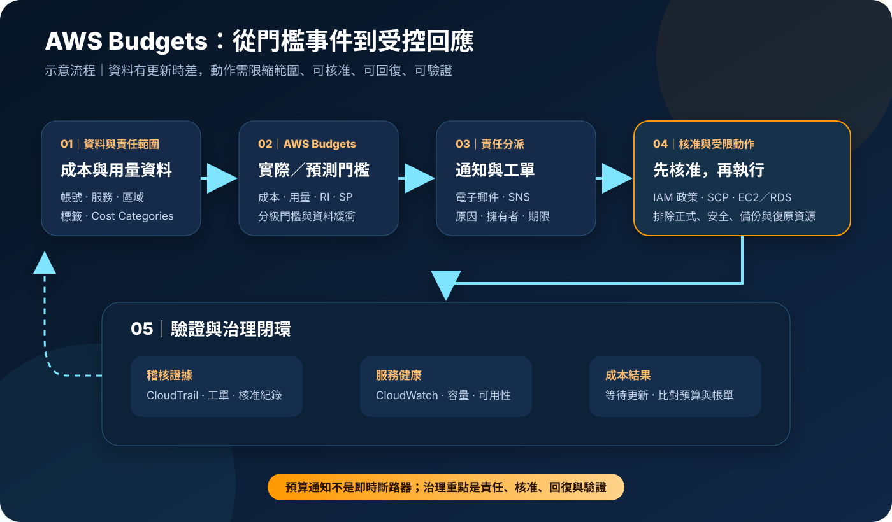

AWS Budgets：預算門檻、通知與受控行動
AWS Budgets 用於為 AWS 成本、用量、Reserved Instances 與 Savings Plans 建立預算，並在實際值或預測值跨越門檻時通知指定對象。它也能觸發受控的 IAM、SCP 或 EC2／RDS 動作，但不會即時停止計費，也不能取代架構容量規劃、異常偵測、發票對帳與服務可用性治理。
作者：Dr. William｜查閱與發布：2026-11-13
服務定位
AWS Budgets 是 AWS Billing and Cost Management 的預算監控服務。管理者可依帳號、服務、區域、標籤、Cost Categories 或其他支援維度建立成本與用量預算，也可追蹤 Reserved Instances 和 Savings Plans 的使用率或涵蓋率。每個預算可設定多個實際或預測門檻，透過電子郵件或 Amazon SNS 通知人員與自動化流程。
Budgets 著重「已知門檻」；Cost Explorer 著重分析成本驅動因素，Cost Anomaly Detection 著重偏離歷史模式的異常，Data Exports 著重明細資料交付。完整 FinOps 流程通常會同時使用這些能力，而不是讓單一預算數字承擔全部判斷。
核心概念與服務邊界
預算構件
- 預算類型：成本、用量、Reserved Instances 與 Savings Plans。
- 期間：可依月、季、年或支援的自訂期間管理。
- 範圍與篩選：依帳號、服務、區域、標籤、成本類別等維度縮小責任範圍。
- 固定或規劃金額：可使用固定值，或為不同期間設定計畫值。
- 門檻：依實際值或預測值，以百分比或絕對值判斷。
回應構件
- 通知：將門檻事件寄送至電子郵件或 Amazon SNS。
- 預算動作：可套用 IAM 政策、SCP，或針對支援的 EC2／RDS 資源執行動作。
- 核准模式：動作可設定自動執行，或先通知指定核准者。
- 歷史：預算與通知狀態可供管理者檢視，但仍需搭配 CloudTrail 與工單保留治理證據。
- 資料時差：成本與用量不是即時控制訊號，門檻需預留緩衝。
適合與不適合的使用情境
適合
- 為團隊、產品、環境或成本中心設定月度成本責任門檻。
- 在實際成本達到 50%、80% 或 100% 等階段時通知不同責任角色。
- 以預測門檻提前辨識月底可能超支的帳號或服務。
- 追蹤 Savings Plans／Reserved Instances 的涵蓋率與使用率是否低於治理標準。
- 對沙盒、開發或實驗環境建立經核准的限制政策或停機動作。
- 將 SNS 事件接入工單、ChatOps 或事件處理流程。
不適合或不能單獨完成
- 要求秒級停止所有新支出或保證帳單絕不超過預算。
- 只靠總額門檻偵測小額但不尋常的資源濫用。
- 未標記資源、未區分共享成本，卻要求精確分派到每個產品。
- 直接對正式資料庫或關鍵運算啟用自動停機，且沒有回復與例外流程。
- 以預算通知取代 CloudWatch 效能告警、CloudTrail 稽核或安全事件偵測。
- 需要稅務發票、逐筆資源明細或即時容量管理時，只依賴 Budgets。
示意故事案例：研發沙盒的分級預算控制
以下為示意案例，不代表特定企業或正式部署。 一家軟體公司為每個研發團隊提供獨立沙盒帳號。FinOps 團隊依帳號與成本中心建立月度成本預算，並要求資源標示應用、環境、擁有者及到期日。50% 門檻通知團隊負責人，80% 門檻同時通知財務與平台團隊；預測將超過 100% 時，自動建立工單並要求說明。
平台團隊沒有直接停止所有執行個體，而是先建立只適用於沙盒組織單位的預算動作。經核准後，SCP 限制新增高成本執行個體類型；既有資源則由擁有者依到期日清理。正式帳號、資安工具、備份、日誌、共享網路與災難復原資源均明確排除。
若團隊因壓力測試需要臨時提高預算，申請必須包含期間、預估金額、核准者與自動到期日。每次動作完成後，平台團隊檢查 CloudTrail、Budgets 狀態、CloudWatch 服務指標及工單紀錄，確認成本控制沒有破壞開發流程或必要安全服務。

建置與運作流程
- 盤點 Organizations、管理帳號、成員帳號、服務擁有者、付款關係與共享成本。
- 定義預算目的：成本上限、用量控制、承諾折扣涵蓋率或使用率，不混用不同責任。
- 以 IAM Identity Center 或聯合身分提供管理權限，要求 MFA 與短期憑證。
- 分離預算檢視、建立、修改、刪除、通知與動作管理權限。
- 選擇預算類型、期間、金額、成本口徑、帳號及服務等篩選條件。
- 確認標籤與 Cost Categories 已啟用且資料涵蓋率達到治理門檻。
- 設定分級的實際與預測門檻，為資料更新時差及月底成長預留緩衝。
- 將一般通知送給責任人；需要系統整合時，使用受控 SNS 主題與訂閱。
- 預算動作先採人工核准，在沙盒驗證 IAM、SCP、EC2 或 RDS 影響。
- 為正式、資安、日誌、備份、網路與復原資源建立明確排除條件。
- 在工單記錄事件、原因、責任人、核准、動作、回復與驗證結果。
- 使用 CloudTrail 稽核 Budgets API 與相關 IAM／Organizations／EC2／RDS 變更。
- 使用 CloudWatch 監控被控服務的效能與可用性，避免成本動作造成事故。
- 每月覆核預算準確度、誤報、未分配成本、動作成效及過期權限。
成本、可用性與維運考量
依 2026-11-13 查閱的 AWS 官方定價，純預算監控與通知免費；每月前兩個具動作的預算免費，之後每個啟用動作的預算按日計費，AWS Budgets Reports 則按寄送報告計費。透過 SNS、Lambda、工單平台、日誌儲存或其他服務延伸流程時，這些相依服務也可能產生費用。實際金額仍以當期官方定價頁為準。
帳務資料不是即時遙測。AWS 官方文件於查閱日說明 Budgets 資訊每日最多更新三次，更新通常相隔約 8 至 12 小時；即使門檻已跨越，後續用量、承諾費用、資料傳輸、支援方案或延遲入帳項目仍可能增加帳單。門檻應依資源建立速度、資料時差與風險設定緩衝；關鍵服務不能把 Budgets 當成唯一保護機制。
預算動作可能降低可用性。套用限制政策可能阻止擴容、部署或事故復原；停止 EC2／RDS 可能中斷服務並影響資料處理。正式環境應優先通知與人工核准，並維持回復角色、變更窗口、備份、跨可用區／跨區復原及 CloudWatch 驗證。
AWS Budgets 特有資安風險與控制
- 預算管理權限過大：以 IAM 最小權限分離檢視、修改通知與建立動作；管理者使用 MFA、短期憑證與受管裝置。
- 動作角色被濫用：Budgets 使用的執行角色只允許必要政策與目標資源，限制信任政策並定期檢查未使用權限。
- SCP 誤傷整個組織：先在沙盒組織單位測試，以人工核准、明確排除與 break-glass 流程降低影響。
- 停機動作破壞可用性：禁止對未分類的正式 EC2／RDS 自動停機；使用標籤、帳號與環境條件縮小範圍。
- 通知外洩帳務資料：SNS 主題與電子郵件收件人依最小知悉設定，定期移除離職或轉調人員。
- SNS 公開或跨帳號授權錯誤：限制主題政策、訂閱與發布來源；需要加密時使用 KMS，並確認服務與訂閱端權限。
- 機密進入通知或自動化：通知、標籤、工單與日誌不得包含 credential、Access Key、Secret Key、Token、密碼或 cookie；整合機密存於 Secrets Manager／Parameter Store。
- 資料分類不足：Cost Categories 與標籤規則需有擁有者及品質檢查，避免錯誤責任歸屬。
- API 與主控台變更未稽核：啟用組織層級 CloudTrail，集中保存 Budgets 與相依服務管理事件。
- 只看成本、不看服務狀態：以 CloudWatch 與服務原生指標驗證限制、停機或恢復後的效能及可用性。
- 公開網路與終端風險：管理操作從企業受管網路與端點進行；自動化執行環境置於受控帳號與網路邊界。
- 通知鏈單點失效：關鍵事件使用多個責任角色與替代管道，定期測試 SNS 訂閱、工單與值班流程。
- 治理證據遺失：預算定義、通知紀錄、工單與報表依政策保存於私有、加密、版本化儲存體，並測試備份與跨區復原。
共同責任邊界
AWS 負責 AWS Budgets 受管服務、預算評估能力、支援的通知與動作整合，以及 AWS 雲端底層基礎設施安全。AWS 依官方文件提供帳務資料處理、功能、API 與服務運作。
客戶負責選擇正確帳號、預算類型、期間、成本口徑、標籤、篩選與門檻；設定 IAM、MFA／短期憑證、SNS、KMS、Secrets Manager／Parameter Store、CloudTrail／CloudWatch；限制公開與跨帳號存取；核准、測試及回復預算動作；保護通知與治理證據；建立備份與跨區復原，並承擔最終成本、可用性、法規與風險決策。
上線與維運可執行檢查清單
- □ 已確認預算目的、擁有者、責任帳號、服務與成本口徑。
- □ Organizations、付款關係、共享成本與正式／非正式環境已盤點。
- □ 所有人員均使用聯合身分、MFA 與短期憑證，root 不用於日常操作。
- □ 檢視、建立、修改、通知與動作權限已依職責分離。
- □ 標籤與 Cost Categories 有擁有者、變更流程與涵蓋率門檻。
- □ 實際與預測門檻已考慮帳務資料更新時差及月底成長。
- □ 電子郵件與 SNS 收件範圍符合最小知悉並定期覆核。
- □ SNS 主題政策、跨帳號授權與 KMS 設定已測試。
- □ 預算動作先在沙盒測試，正式環境預設使用人工核准。
- □ 執行角色、IAM 政策與 SCP 僅允許必要動作及目標。
- □ 正式、資安、日誌、備份、共享網路與復原資源已有排除條件。
- □ 每個動作都有回復角色、操作手冊、變更窗口與停止條件。
- □ CloudTrail 已集中記錄 Budgets 及相依服務管理事件。
- □ CloudWatch 可驗證動作前後的效能、容量與可用性。
- □ 通知、標籤、工單與日誌不含 credential、Access Key、Secret Key、Token、密碼或 cookie。
- □ 整合機密存於 Secrets Manager／Parameter Store，未寫入程式碼或通知。
- □ 預算、通知、工單與報表保存於私有、KMS 加密與版本化儲存體。
- □ 通知替代管道、備份及跨帳號／跨區復原已實際測試。
- □ 每月覆核誤報、漏報、未分配成本、動作成效與過期權限。
AWS 官方一手來源
- AWS Budgets 產品頁（查閱：2026-11-13）
- Managing your costs with AWS Budgets（查閱：2026-11-13）
- Creating a budget（查閱：2026-11-13）
- Applying filters and advanced options（查閱：2026-11-13）
- Creating an Amazon SNS topic for budget notifications（查閱：2026-11-13）
- Configuring budget actions（查閱：2026-11-13）
- Creating a budget action（查閱：2026-11-13）
- Reviewing and approving a budget action（查閱：2026-11-13）
- Setting up a role for AWS Budgets to run budget actions（查閱：2026-11-13）
- AWS Budgets Pricing（查閱：2026-11-13）
- AWS Budgets API operations（查閱：2026-11-13）
- How AWS Cost Management works with IAM（查閱：2026-11-13）
- Logging Billing and Cost Management API calls with AWS CloudTrail（查閱：2026-11-13）
- AWS Shared Responsibility Model（查閱：2026-11-13）
內容說明
本文依查閱日可用的 AWS 官方文件整理，作為基礎學習與架構討論材料；實際作業仍須依最新預算類型、定價、資料更新時間、Organizations 結構、IAM／SCP、SNS、KMS、支援動作、成本口徑及組織變更與風險管理程序調整。